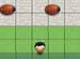
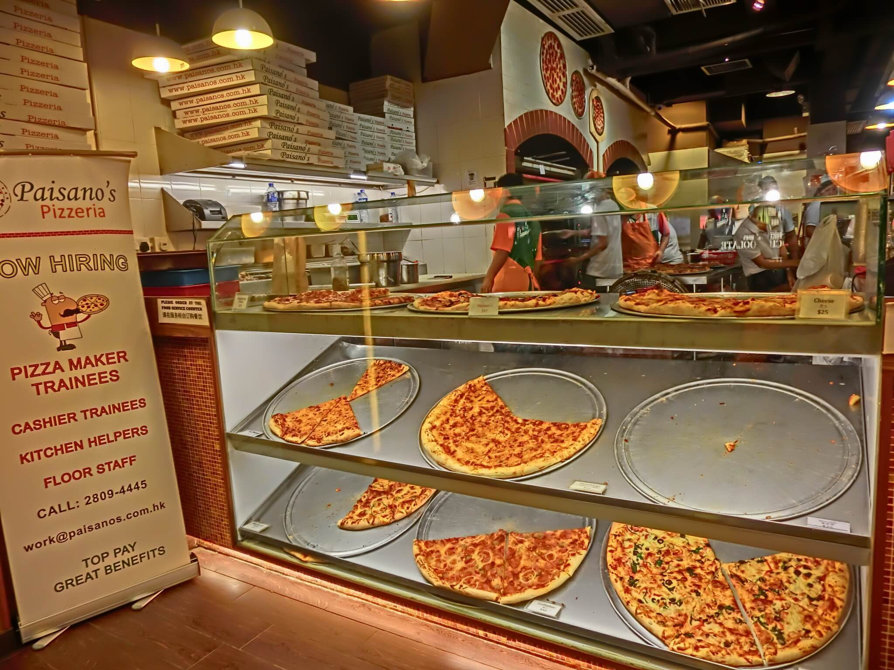

-

This Bugs Me!
A froggor-like game built with Javascript.
-
 My Résumé and other Portfolio
My Résumé and other Portfolio
A combined look at my writing and front end skills.
-
Commercial Copy
Commercials written for an office product.
-

Cam's Pizzeria
Who wants a performant pizza?